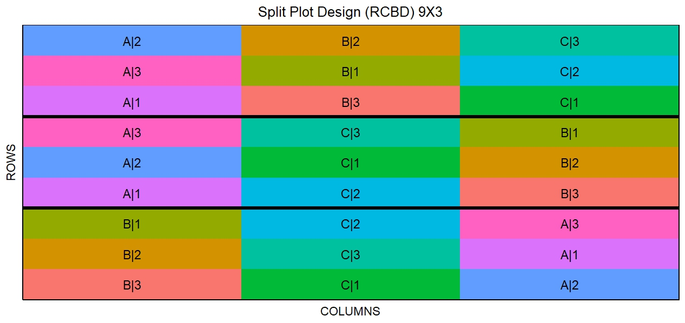
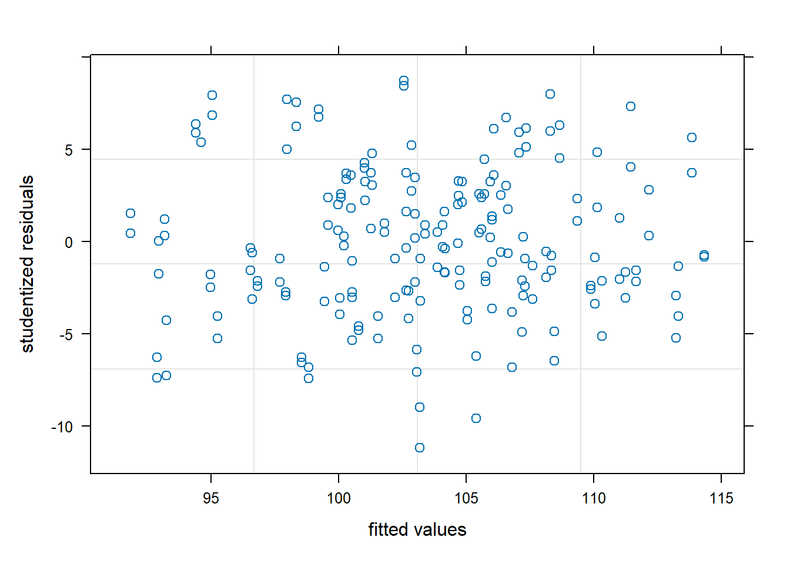
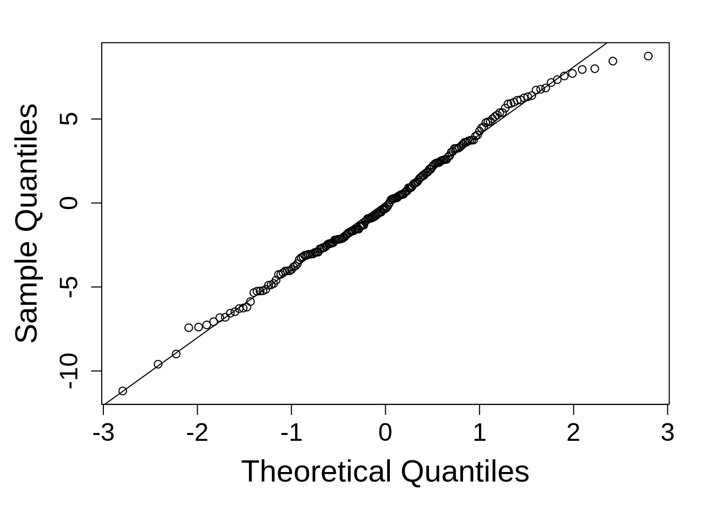

height_data <- readxl::read_excel(here::here("data", "height_data.xlsx"))5 Split Plot Design
Split-plot design is frequently used for factorial experiments. Such design may incorporate one or more of the completely randomized (CRD), completely randomized block (RCBD), and Latin square designs. The main principle is that there are whole plots or whole units, to which the levels of one or more factors are applied. Thus each whole plot becomes a block for the subplot treatments.
5.1 Details for Split Plot Designs
- Whole Plot Randomized as a completely randomized design
The statistical model structure this design:
\[y_{ijk} = \mu + \alpha_i + \beta_k + (\alpha_j\beta_k) + \epsilon_{ij} + \delta_{ijk} \] Where:
\(\mu\)= overall experimental mean, \(\alpha\) = main effect of whole plot (fixed), \(\beta\) = main effect of subplot (fixed), \(\alpha\)\(\tau\) = interaction between factors A and B, \(\epsilon_{ij}\) = whole plot error, \(\delta_{ijk}\) = subplot error.
\[ \epsilon \sim N(0, \sigma_\epsilon)\]
\[\ \delta \sim N(0, \sigma_\delta)\]
Both the error and the rep effects are assumed to be normally distributed with a mean of zero and standard deviations of \(\sigma_\epsilon\) and \(\sigma_\delta\), respectively.
- Whole Plot Randomized as an RCBD
This is also referred as “Split-Block RCB” design. The statistical model structure for split plot design:
\[y_{ijk} = \mu + \rho_j + \alpha_i + \beta_k + (\alpha_i\beta_k) + \epsilon_{ij} + \delta_{ijk}\] Where:
\(\mu\) = overall experimental mean, \(\rho\) = block effect (random), \(\alpha\) = main effect of whole plot (fixed), \(\beta\) = main effect of subplot (fixed), \(\alpha\)\(\beta\) = interaction between factors A and B, \(\epsilon_{ij}\) = whole plot error, \(\delta_{ijk}\) = subplot error.
\[ \epsilon \sim N(0, \sigma_\epsilon)\]
\[\ \delta \sim N(0, \sigma_\delta)\]
Both the overall error and the rep effects are assumed to be normally distributed with a mean of zero and standard deviations of \(\sigma\) and \(\sigma_\delta\), respectively.
5.1.0.1 ‘iid’ assumption for error terms
In these model, the error terms, \(\epsilon\) are assumed to be “iid”, that is, independently and identically distributed. This means they have constant variance and they each individual error term is independent from the others.


5.2 Analysis Examples
5.2.1 Example model for CRD Split Plot Designs
- Load required libraries
5.2.1.1 Import height data and check the data integrity.
The data (Height data) for this example involves a CRD split plot designed experiment. Treatments are 4 Timings (times) and 8 managements (manage). The whole plots are times and management represents subplot and 3 replications.
- Run a cross tabulation using
table()to check the arrangement of whole-plots and sub-plots.
table(height_data$time, height_data$manage)
M1 M2 M3 M4 M5 M6 M7 M8
T1 6 6 6 6 6 6 6 6
T2 6 6 6 6 6 6 6 6
T3 6 6 6 6 6 6 6 6
T4 6 6 6 6 6 6 6 6- Look at structure of the data using
str(), this will help in identifying class of the variable. In this dataset, class of the whole-plot, sub-plot, and block should be factor/character and response variable (height) should be numeric.
str(height_data)tibble [192 × 5] (S3: tbl_df/tbl/data.frame)
$ time : chr [1:192] "T1" "T1" "T1" "T1" ...
$ manage: chr [1:192] "M1" "M2" "M3" "M4" ...
$ rep : chr [1:192] "R1" "R1" "R1" "R1" ...
$ sample: chr [1:192] "S1" "S1" "S1" "S1" ...
$ height: num [1:192] 104.5 92.3 96.8 94.7 105.7 ...- Check the number of missing values in each column.
apply(height_data, 2, function(x) sum(is.na(x))) time manage rep sample height
0 0 0 0 0 - Exploratory boxplot to look at the height observations at different times with variable managements.
ggplot(data = height_data, aes(y = height, x = time)) +
geom_boxplot(aes(colour = manage))
5.2.1.2 Model building
Recall the model:
\[y_{ijk} = \mu + \gamma_i + \alpha_j + \beta_k + (\alpha_j\beta_k) + \epsilon_{ijk}\]
For this model, \(\gamma\) = block/rep effect (random), \(\alpha\) = main effect of whole plot (fixed), \(\beta\) = main effect of subplot (fixed), \(\alpha\)\(\beta\) = interaction between factors A and B (fixed).
In order to test the main effects of the treatments as well as the interaction between two factors, we can specify that in model as: time + manage + time:manage or time*manage.
When dealing with split plot design across reps or blocks, the random effects needs to be nested hierarchically, from largest unit to smallest. For example, in this example the random effects will be designated as (1 | rep/time). This implies that random intercepts vary with rep and time within rep.
model1 <- lmer(height ~ time*manage + (1|rep/time), data = height_data)
summary(model1)Linear mixed model fit by REML ['lmerMod']
Formula: height ~ time * manage + (1 | rep/time)
Data: height_data
REML criterion at convergence: 997.8
Scaled residuals:
Min 1Q Median 3Q Max
-2.53183 -0.60511 -0.07333 0.62458 1.97914
Random effects:
Groups Name Variance Std.Dev.
time:rep (Intercept) 0.6118 0.7822
rep (Intercept) 20.1069 4.4841
Residual 19.5318 4.4195
Number of obs: 192, groups: time:rep, 12; rep, 3
Fixed effects:
Estimate Std. Error t value
(Intercept) 108.0333 3.1877 33.890
timeT2 3.1833 2.6303 1.210
timeT3 -2.2500 2.6303 -0.855
timeT4 1.2833 2.6303 0.488
manageM2 -4.4500 2.5516 -1.744
manageM3 -5.3000 2.5516 -2.077
manageM4 -6.1833 2.5516 -2.423
manageM5 -5.0167 2.5516 -1.966
manageM6 -3.4167 2.5516 -1.339
manageM7 -9.7500 2.5516 -3.821
manageM8 -4.6667 2.5516 -1.829
timeT2:manageM2 -1.4167 3.6085 -0.393
timeT3:manageM2 0.4667 3.6085 0.129
timeT4:manageM2 -4.6667 3.6085 -1.293
timeT2:manageM3 -1.9667 3.6085 -0.545
timeT3:manageM3 -2.3500 3.6085 -0.651
timeT4:manageM3 -0.8667 3.6085 -0.240
timeT2:manageM4 3.1000 3.6085 0.859
timeT3:manageM4 0.9000 3.6085 0.249
timeT4:manageM4 7.8500 3.6085 2.175
timeT2:manageM5 -1.0167 3.6085 -0.282
timeT3:manageM5 -0.9000 3.6085 -0.249
timeT4:manageM5 -2.4667 3.6085 -0.684
timeT2:manageM6 0.5333 3.6085 0.148
timeT3:manageM6 -3.9333 3.6085 -1.090
timeT4:manageM6 1.1167 3.6085 0.309
timeT2:manageM7 -1.9333 3.6085 -0.536
timeT3:manageM7 1.0667 3.6085 0.296
timeT4:manageM7 -1.3833 3.6085 -0.383
timeT2:manageM8 -1.3167 3.6085 -0.365
timeT3:manageM8 -0.8167 3.6085 -0.226
timeT4:manageM8 -0.2000 3.6085 -0.055
Correlation matrix not shown by default, as p = 32 > 12.
Use print(x, correlation=TRUE) or
vcov(x) if you need itmodel1 <-lme(height ~ time*manage,
random = ~ 1|rep/time, data = height_data)
summary(model1)Linear mixed-effects model fit by REML
Data: height_data
AIC BIC logLik
1067.782 1175.413 -498.8911
Random effects:
Formula: ~1 | rep
(Intercept)
StdDev: 4.483903
Formula: ~1 | time %in% rep
(Intercept) Residual
StdDev: 0.7822445 4.419479
Fixed effects: height ~ time * manage
Value Std.Error DF t-value p-value
(Intercept) 108.03333 3.187642 152 33.89130 0.0000
timeT2 3.18333 2.630311 6 1.21025 0.2717
timeT3 -2.25000 2.630311 6 -0.85541 0.4252
timeT4 1.28333 2.630311 6 0.48790 0.6429
manageM2 -4.45000 2.551588 152 -1.74401 0.0832
manageM3 -5.30000 2.551588 152 -2.07714 0.0395
manageM4 -6.18333 2.551588 152 -2.42333 0.0166
manageM5 -5.01667 2.551588 152 -1.96610 0.0511
manageM6 -3.41667 2.551588 152 -1.33904 0.1826
manageM7 -9.75000 2.551588 152 -3.82115 0.0002
manageM8 -4.66667 2.551588 152 -1.82893 0.0694
timeT2:manageM2 -1.41667 3.608490 152 -0.39259 0.6952
timeT3:manageM2 0.46667 3.608490 152 0.12932 0.8973
timeT4:manageM2 -4.66667 3.608490 152 -1.29325 0.1979
timeT2:manageM3 -1.96667 3.608490 152 -0.54501 0.5865
timeT3:manageM3 -2.35000 3.608490 152 -0.65124 0.5159
timeT4:manageM3 -0.86667 3.608490 152 -0.24017 0.8105
timeT2:manageM4 3.10000 3.608490 152 0.85909 0.3916
timeT3:manageM4 0.90000 3.608490 152 0.24941 0.8034
timeT4:manageM4 7.85000 3.608490 152 2.17543 0.0311
timeT2:manageM5 -1.01667 3.608490 152 -0.28174 0.7785
timeT3:manageM5 -0.90000 3.608490 152 -0.24941 0.8034
timeT4:manageM5 -2.46667 3.608490 152 -0.68357 0.4953
timeT2:manageM6 0.53333 3.608490 152 0.14780 0.8827
timeT3:manageM6 -3.93333 3.608490 152 -1.09002 0.2774
timeT4:manageM6 1.11667 3.608490 152 0.30946 0.7574
timeT2:manageM7 -1.93333 3.608490 152 -0.53577 0.5929
timeT3:manageM7 1.06667 3.608490 152 0.29560 0.7679
timeT4:manageM7 -1.38333 3.608490 152 -0.38336 0.7020
timeT2:manageM8 -1.31667 3.608490 152 -0.36488 0.7157
timeT3:manageM8 -0.81667 3.608490 152 -0.22632 0.8213
timeT4:manageM8 -0.20000 3.608490 152 -0.05542 0.9559
Correlation:
(Intr) timeT2 timeT3 timeT4 mangM2 mangM3 mangM4 mangM5 mangM6
timeT2 -0.413
timeT3 -0.413 0.500
timeT4 -0.413 0.500 0.500
manageM2 -0.400 0.485 0.485 0.485
manageM3 -0.400 0.485 0.485 0.485 0.500
manageM4 -0.400 0.485 0.485 0.485 0.500 0.500
manageM5 -0.400 0.485 0.485 0.485 0.500 0.500 0.500
manageM6 -0.400 0.485 0.485 0.485 0.500 0.500 0.500 0.500
manageM7 -0.400 0.485 0.485 0.485 0.500 0.500 0.500 0.500 0.500
manageM8 -0.400 0.485 0.485 0.485 0.500 0.500 0.500 0.500 0.500
timeT2:manageM2 0.283 -0.686 -0.343 -0.343 -0.707 -0.354 -0.354 -0.354 -0.354
timeT3:manageM2 0.283 -0.343 -0.686 -0.343 -0.707 -0.354 -0.354 -0.354 -0.354
timeT4:manageM2 0.283 -0.343 -0.343 -0.686 -0.707 -0.354 -0.354 -0.354 -0.354
timeT2:manageM3 0.283 -0.686 -0.343 -0.343 -0.354 -0.707 -0.354 -0.354 -0.354
timeT3:manageM3 0.283 -0.343 -0.686 -0.343 -0.354 -0.707 -0.354 -0.354 -0.354
timeT4:manageM3 0.283 -0.343 -0.343 -0.686 -0.354 -0.707 -0.354 -0.354 -0.354
timeT2:manageM4 0.283 -0.686 -0.343 -0.343 -0.354 -0.354 -0.707 -0.354 -0.354
timeT3:manageM4 0.283 -0.343 -0.686 -0.343 -0.354 -0.354 -0.707 -0.354 -0.354
timeT4:manageM4 0.283 -0.343 -0.343 -0.686 -0.354 -0.354 -0.707 -0.354 -0.354
timeT2:manageM5 0.283 -0.686 -0.343 -0.343 -0.354 -0.354 -0.354 -0.707 -0.354
timeT3:manageM5 0.283 -0.343 -0.686 -0.343 -0.354 -0.354 -0.354 -0.707 -0.354
timeT4:manageM5 0.283 -0.343 -0.343 -0.686 -0.354 -0.354 -0.354 -0.707 -0.354
timeT2:manageM6 0.283 -0.686 -0.343 -0.343 -0.354 -0.354 -0.354 -0.354 -0.707
timeT3:manageM6 0.283 -0.343 -0.686 -0.343 -0.354 -0.354 -0.354 -0.354 -0.707
timeT4:manageM6 0.283 -0.343 -0.343 -0.686 -0.354 -0.354 -0.354 -0.354 -0.707
timeT2:manageM7 0.283 -0.686 -0.343 -0.343 -0.354 -0.354 -0.354 -0.354 -0.354
timeT3:manageM7 0.283 -0.343 -0.686 -0.343 -0.354 -0.354 -0.354 -0.354 -0.354
timeT4:manageM7 0.283 -0.343 -0.343 -0.686 -0.354 -0.354 -0.354 -0.354 -0.354
timeT2:manageM8 0.283 -0.686 -0.343 -0.343 -0.354 -0.354 -0.354 -0.354 -0.354
timeT3:manageM8 0.283 -0.343 -0.686 -0.343 -0.354 -0.354 -0.354 -0.354 -0.354
timeT4:manageM8 0.283 -0.343 -0.343 -0.686 -0.354 -0.354 -0.354 -0.354 -0.354
mangM7 mangM8 tT2:M2 tT3:M2 tT4:M2 tT2:M3 tT3:M3 tT4:M3 tT2:M4
timeT2
timeT3
timeT4
manageM2
manageM3
manageM4
manageM5
manageM6
manageM7
manageM8 0.500
timeT2:manageM2 -0.354 -0.354
timeT3:manageM2 -0.354 -0.354 0.500
timeT4:manageM2 -0.354 -0.354 0.500 0.500
timeT2:manageM3 -0.354 -0.354 0.500 0.250 0.250
timeT3:manageM3 -0.354 -0.354 0.250 0.500 0.250 0.500
timeT4:manageM3 -0.354 -0.354 0.250 0.250 0.500 0.500 0.500
timeT2:manageM4 -0.354 -0.354 0.500 0.250 0.250 0.500 0.250 0.250
timeT3:manageM4 -0.354 -0.354 0.250 0.500 0.250 0.250 0.500 0.250 0.500
timeT4:manageM4 -0.354 -0.354 0.250 0.250 0.500 0.250 0.250 0.500 0.500
timeT2:manageM5 -0.354 -0.354 0.500 0.250 0.250 0.500 0.250 0.250 0.500
timeT3:manageM5 -0.354 -0.354 0.250 0.500 0.250 0.250 0.500 0.250 0.250
timeT4:manageM5 -0.354 -0.354 0.250 0.250 0.500 0.250 0.250 0.500 0.250
timeT2:manageM6 -0.354 -0.354 0.500 0.250 0.250 0.500 0.250 0.250 0.500
timeT3:manageM6 -0.354 -0.354 0.250 0.500 0.250 0.250 0.500 0.250 0.250
timeT4:manageM6 -0.354 -0.354 0.250 0.250 0.500 0.250 0.250 0.500 0.250
timeT2:manageM7 -0.707 -0.354 0.500 0.250 0.250 0.500 0.250 0.250 0.500
timeT3:manageM7 -0.707 -0.354 0.250 0.500 0.250 0.250 0.500 0.250 0.250
timeT4:manageM7 -0.707 -0.354 0.250 0.250 0.500 0.250 0.250 0.500 0.250
timeT2:manageM8 -0.354 -0.707 0.500 0.250 0.250 0.500 0.250 0.250 0.500
timeT3:manageM8 -0.354 -0.707 0.250 0.500 0.250 0.250 0.500 0.250 0.250
timeT4:manageM8 -0.354 -0.707 0.250 0.250 0.500 0.250 0.250 0.500 0.250
tT3:M4 tT4:M4 tT2:M5 tT3:M5 tT4:M5 tT2:M6 tT3:M6 tT4:M6 tT2:M7
timeT2
timeT3
timeT4
manageM2
manageM3
manageM4
manageM5
manageM6
manageM7
manageM8
timeT2:manageM2
timeT3:manageM2
timeT4:manageM2
timeT2:manageM3
timeT3:manageM3
timeT4:manageM3
timeT2:manageM4
timeT3:manageM4
timeT4:manageM4 0.500
timeT2:manageM5 0.250 0.250
timeT3:manageM5 0.500 0.250 0.500
timeT4:manageM5 0.250 0.500 0.500 0.500
timeT2:manageM6 0.250 0.250 0.500 0.250 0.250
timeT3:manageM6 0.500 0.250 0.250 0.500 0.250 0.500
timeT4:manageM6 0.250 0.500 0.250 0.250 0.500 0.500 0.500
timeT2:manageM7 0.250 0.250 0.500 0.250 0.250 0.500 0.250 0.250
timeT3:manageM7 0.500 0.250 0.250 0.500 0.250 0.250 0.500 0.250 0.500
timeT4:manageM7 0.250 0.500 0.250 0.250 0.500 0.250 0.250 0.500 0.500
timeT2:manageM8 0.250 0.250 0.500 0.250 0.250 0.500 0.250 0.250 0.500
timeT3:manageM8 0.500 0.250 0.250 0.500 0.250 0.250 0.500 0.250 0.250
timeT4:manageM8 0.250 0.500 0.250 0.250 0.500 0.250 0.250 0.500 0.250
tT3:M7 tT4:M7 tT2:M8 tT3:M8
timeT2
timeT3
timeT4
manageM2
manageM3
manageM4
manageM5
manageM6
manageM7
manageM8
timeT2:manageM2
timeT3:manageM2
timeT4:manageM2
timeT2:manageM3
timeT3:manageM3
timeT4:manageM3
timeT2:manageM4
timeT3:manageM4
timeT4:manageM4
timeT2:manageM5
timeT3:manageM5
timeT4:manageM5
timeT2:manageM6
timeT3:manageM6
timeT4:manageM6
timeT2:manageM7
timeT3:manageM7
timeT4:manageM7 0.500
timeT2:manageM8 0.250 0.250
timeT3:manageM8 0.500 0.250 0.500
timeT4:manageM8 0.250 0.500 0.500 0.500
Standardized Within-Group Residuals:
Min Q1 Med Q3 Max
-2.53183600 -0.60511301 -0.07332633 0.62457774 1.97914273
Number of Observations: 192
Number of Groups:
rep time %in% rep
3 12 5.2.1.3 Check Model Assumptions
Before interpreting the model we should investigate the assumptions of the model to ensure any conclusions we draw are valid. There are assumptions that we can check are 1. Homogeneity (equal variance) 2. normality of residuals 3. values with high leverage.
We can evaluate the assumptions in two ways: 1. By plotting model using plot() and residuals using qqnorm().
plot(model1, resid(., scaled=TRUE) ~ fitted(.),
xlab = "fitted values", ylab = "studentized residuals")

We are looking for a random and uniform distribution of points. This looks good!
The same code works for nlme and lme4-generated models.
Checking normality requiring first extracting the model residuals with resid() and then generaing a qq-plot and line.
qqnorm(resid(model1), main = NULL); qqline(resid(model1))

Or we can use check_model() function from ‘performance’ package. The plots generated using this code gives a visual check of various assumptions including normality of residuals, normality of random effects, heteroscedasticity, homogeneity of variance, and multicollinearity.
# checking model assumptions
check_model(model1)Converting missing values (`NA`) into regular values currently not
possible for variables of class `NULL`.In this case the residuals fit the assumptions of the model well.
5.2.1.4 Inference
The anova() function prints the the rows of analysis of variance table for whole-plot, sub-plot, and their interactions. We observed a signficant effect if time and manage factors.
# same syntax for lme4 & nlme
anova(model1) numDF denDF F-value p-value
(Intercept) 1 152 1560.4124 <.0001
time 3 6 9.3310 0.0112
manage 7 152 10.8425 <.0001
time:manage 21 152 1.1588 0.2955The estimated marginal means for each fixed effect and interaction effect can be obtained using emmeans().
m1 <- emmeans(model1, ~ time)NOTE: Results may be misleading due to involvement in interactionsm1 time emmean SE df lower.CL upper.CL
T1 103 2.7 2 91.6 115
T2 106 2.7 2 94.2 118
T3 100 2.7 2 88.6 112
T4 104 2.7 2 92.8 116
Results are averaged over the levels of: manage
Degrees-of-freedom method: containment
Confidence level used: 0.95 m2 <- emmeans(model1, ~ manage)NOTE: Results may be misleading due to involvement in interactionsm2 manage emmean SE df lower.CL upper.CL
M1 108.6 2.75 2 96.8 120
M2 102.7 2.75 2 90.9 115
M3 102.0 2.75 2 90.2 114
M4 105.4 2.75 2 93.5 117
M5 102.5 2.75 2 90.6 114
M6 104.6 2.75 2 92.8 116
M7 98.3 2.75 2 86.4 110
M8 103.3 2.75 2 91.5 115
Results are averaged over the levels of: time
Degrees-of-freedom method: containment
Confidence level used: 0.95 Further, a pairwise comparison or contrasts can be analyzed using estimated means.
For example, if we want to compare difference in height at different time periods, this could be done using pairs() command from emmeans package.
pairs(m1) contrast estimate SE df t.ratio p.value
T1 - T2 -2.68 1.11 6 -2.426 0.1719
T1 - T3 2.95 1.11 6 2.665 0.1287
T1 - T4 -1.21 1.11 6 -1.091 0.7072
T2 - T3 5.63 1.11 6 5.091 0.0089
T2 - T4 1.48 1.11 6 1.334 0.5767
T3 - T4 -4.15 1.11 6 -3.756 0.0358
Results are averaged over the levels of: manage
Degrees-of-freedom method: containment
P value adjustment: tukey method for comparing a family of 4 estimates The letters indicating significant differences can be generated using cld() function from the ‘multcomp’ package”. In the output below, groups sharing a letter in the .group are not statistically different from each other.
cld(m1, Letters= TRUE) time emmean SE df lower.CL upper.CL .group
T3 100 2.7 2 88.6 112 T
T1 103 2.7 2 91.6 115 TR
T4 104 2.7 2 92.8 116 R
T2 106 2.7 2 94.2 118 R
Results are averaged over the levels of: manage
Degrees-of-freedom method: containment
Confidence level used: 0.95
P value adjustment: tukey method for comparing a family of 4 estimates
significance level used: alpha = 0.05
NOTE: If two or more means share the same grouping symbol,
then we cannot show them to be different.
But we also did not show them to be the same. cld(m2, Letters= TRUE) manage emmean SE df lower.CL upper.CL .group
M7 98.3 2.75 2 86.4 110 T
M3 102.0 2.75 2 90.2 114 TR
M5 102.5 2.75 2 90.6 114 R
M2 102.7 2.75 2 90.9 115 R
M8 103.3 2.75 2 91.5 115 R
M6 104.6 2.75 2 92.8 116 R
M4 105.4 2.75 2 93.5 117 RU
M1 108.6 2.75 2 96.8 120 U
Results are averaged over the levels of: time
Degrees-of-freedom method: containment
Confidence level used: 0.95
P value adjustment: tukey method for comparing a family of 8 estimates
significance level used: alpha = 0.05
NOTE: If two or more means share the same grouping symbol,
then we cannot show them to be different.
But we also did not show them to be the same. 5.2.2 Example model for RCBD Split Plot Designs
The oats data used in this example is from the MASS package. The design with RCBD split plot with 6 blocks, 3 main plots and 4 sub-plots. The primary outcome variable was oat yield.
Main plot = Variety (V), 3 levels
Subplot = Nitrogen (N), 4 levels
Number of blocks (B) = 6
Dependent variable = yield (Y)
The objective of this analysis is to study the impact of different varieties and nitrogen application rates on oat yields.
To fully examine the yield of oats due to varieties and nutrient levels in a split plots. We will need to statistically analyse and compare the effects of varieties, nutrient levels, their interaction, and the effects of plots and subplots.
5.2.2.1 Import data and check the data structure.
library(MASS)
data("oats")
head(oats,5) B V N Y
1 I Victory 0.0cwt 111
2 I Victory 0.2cwt 130
3 I Victory 0.4cwt 157
4 I Victory 0.6cwt 174
5 I Golden.rain 0.0cwt 117Evaluate the structure of the data. The “B”, “V”, and “N” needs to be ‘factor’ and “Y” should be numeric.
str(oats)'data.frame': 72 obs. of 4 variables:
$ B: Factor w/ 6 levels "I","II","III",..: 1 1 1 1 1 1 1 1 1 1 ...
$ V: Factor w/ 3 levels "Golden.rain",..: 3 3 3 3 1 1 1 1 2 2 ...
$ N: Factor w/ 4 levels "0.0cwt","0.2cwt",..: 1 2 3 4 1 2 3 4 1 2 ...
$ Y: int 111 130 157 174 117 114 161 141 105 140 ...Running the table() command to verify the levels of main-plots and sub-plots.
table(oats$V, oats$N)
0.0cwt 0.2cwt 0.4cwt 0.6cwt
Golden.rain 6 6 6 6
Marvellous 6 6 6 6
Victory 6 6 6 6Recall the model:
\[y_{ijk} = \mu + \rho_j + \alpha_i + \beta_k + (\alpha_i\beta_k) + \epsilon_{ij} + \delta_{ijk}\] Where:
\(\mu\) = overall experimental mean, \(\rho\) = block effect (random), \(\alpha\) = main effect of whole plot (fixed), \(\beta\) = main effect of subplot (fixed), \(\alpha\)\(\beta\) = interaction between factors A and B, \(\epsilon_{ij}\) = whole plot error, \(\delta_{ijk}\) = subplot error.
5.2.2.2 Building the Model
We are evaluating the effect of V, N and their interaction on yield. The 1|B/V implies that random intercepts vary with block and V within each block.
model2 <- lmer(Y ~ V + N + V:N + (1|B/V),
data = oats,
na.action = na.exclude)
summary(model2)Linear mixed model fit by REML ['lmerMod']
Formula: Y ~ V + N + V:N + (1 | B/V)
Data: oats
REML criterion at convergence: 529
Scaled residuals:
Min 1Q Median 3Q Max
-1.81301 -0.56145 0.01758 0.63865 1.57034
Random effects:
Groups Name Variance Std.Dev.
V:B (Intercept) 106.1 10.30
B (Intercept) 214.5 14.65
Residual 177.1 13.31
Number of obs: 72, groups: V:B, 18; B, 6
Fixed effects:
Estimate Std. Error t value
(Intercept) 80.0000 9.1070 8.784
VMarvellous 6.6667 9.7150 0.686
VVictory -8.5000 9.7150 -0.875
N0.2cwt 18.5000 7.6829 2.408
N0.4cwt 34.6667 7.6829 4.512
N0.6cwt 44.8333 7.6829 5.835
VMarvellous:N0.2cwt 3.3333 10.8653 0.307
VVictory:N0.2cwt -0.3333 10.8653 -0.031
VMarvellous:N0.4cwt -4.1667 10.8653 -0.383
VVictory:N0.4cwt 4.6667 10.8653 0.430
VMarvellous:N0.6cwt -4.6667 10.8653 -0.430
VVictory:N0.6cwt 2.1667 10.8653 0.199
Correlation of Fixed Effects:
(Intr) VMrvll VVctry N0.2cw N0.4cw N0.6cw VM:N0.2 VV:N0.2 VM:N0.4
VMarvellous -0.533
VVictory -0.533 0.500
N0.2cwt -0.422 0.395 0.395
N0.4cwt -0.422 0.395 0.395 0.500
N0.6cwt -0.422 0.395 0.395 0.500 0.500
VMrvll:N0.2 0.298 -0.559 -0.280 -0.707 -0.354 -0.354
VVctry:N0.2 0.298 -0.280 -0.559 -0.707 -0.354 -0.354 0.500
VMrvll:N0.4 0.298 -0.559 -0.280 -0.354 -0.707 -0.354 0.500 0.250
VVctry:N0.4 0.298 -0.280 -0.559 -0.354 -0.707 -0.354 0.250 0.500 0.500
VMrvll:N0.6 0.298 -0.559 -0.280 -0.354 -0.354 -0.707 0.500 0.250 0.500
VVctry:N0.6 0.298 -0.280 -0.559 -0.354 -0.354 -0.707 0.250 0.500 0.250
VV:N0.4 VM:N0.6
VMarvellous
VVictory
N0.2cwt
N0.4cwt
N0.6cwt
VMrvll:N0.2
VVctry:N0.2
VMrvll:N0.4
VVctry:N0.4
VMrvll:N0.6 0.250
VVctry:N0.6 0.500 0.500 model2 <- lme(Y ~ V + N + V:N ,
random = ~1|B/V,
data = oats,
na.action = na.exclude)
summary(model2)5.2.2.3 Check Model Assumptions
Normality of residuals and homogenous variance
# checking model assumptions
check_model(model2)5.2.2.4 Inference
anova(model2)Analysis of Variance Table
npar Sum Sq Mean Sq F value
V 2 526.1 263.0 1.4853
N 3 20020.5 6673.5 37.6857
V:N 6 321.7 53.6 0.3028Post-Hoc analysis
emm <- emmeans(model2, ~ V *N)
RCBD Split-plot
The RCBD split-plot design is also commonly called split-block Design or the strip-plot Design